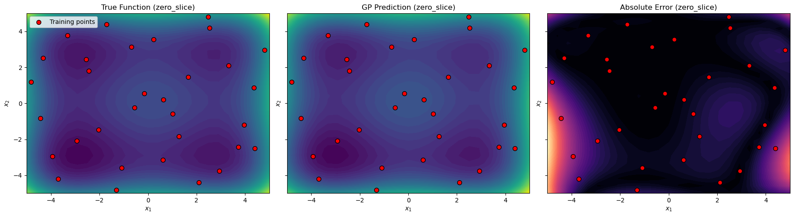

High-Dimensional DEGP Tutorial: 4D Function Approximation with 2D Visualization#
In this tutorial, Derivative-Enhanced Gaussian Processes (DEGPs) are applied to a high-dimensional 4D function. We analyze the model’s performance through 2D slices of the input space, which allows us to visualize complex high-dimensional behavior in a comprehensible way.
This approach is useful for: - Understanding the behavior of high-dimensional nonlinear functions. - Leveraging derivative information to improve model accuracy. - Reducing computational cost by selectively including key derivatives.
Setup#
We begin by importing all necessary libraries, including pyoti for hypercomplex AD, full_degp for DEGP modeling, and standard scientific Python packages.
import numpy as np
import pyoti.sparse as oti
from full_degp.degp import degp
import utils
import time
from matplotlib import pyplot as plt
from scipy.stats import qmc
from typing import List, Dict, Callable
Configuration#
We explicitly define all configuration parameters as simple variables. This includes the dimensionality of the input space, number of training points, kernel type, and other hyperparameters.
n_bases = 4
n_order = 2
num_training_pts = 25
slice_grid_resolution = 25
lower_bounds = [-5.0]*4
upper_bounds = [5.0]*4
normalize_data = True
kernel = "SE"
kernel_type = "anisotropic"
n_restarts = 15
swarm_size = 200
random_seed = 1354
np.random.seed(random_seed)
True Function#
The function we aim to model is the 4D Styblinski–Tang function. It is nonlinear and exhibits multiple minima, making it a challenging test case for high-dimensional regression methods.
def styblinski_tang_4d(X, alg=oti):
"""
Styblinski–Tang function in 4D:
f(x1,x2,x3,x4) = 0.5 * sum_{i=1}^4 (x_i^4 - 16 x_i^2 + 5 x_i)
"""
x1, x2, x3, x4 = X[:,0], X[:,1], X[:,2], X[:,3]
return 0.5 * (x1**4 - 16*x1**2 + 5*x1 +
x2**4 - 16*x2**2 + 5*x2 +
x3**4 - 16*x3**2 + 5*x3 +
x4**4 - 16*x4**2 + 5*x4)
Derivative Strategy#
DEGP allows us to include derivative observations to improve the predictive accuracy of the model. Here we select only the main first- and second-order derivatives, which significantly reduces computational cost while preserving accuracy.
def analyze_derivatives(n_bases, n_order):
"""Select main derivatives only (1st and 2nd order) and print counts."""
complete_indices = utils.gen_OTI_indices(n_bases, n_order)
complete_count = sum(len(group) for group in complete_indices)
der_indices = [
[[[i + 1, 1]] for i in range(n_bases)], # 1st order
[[[i + 1, 2]] for i in range(n_bases)] # 2nd order
]
selective_count = sum(len(group) for group in der_indices)
print(f"Complete derivative set: {complete_count} terms (incl. cross-terms)")
print(f"Selective strategy: {selective_count} terms (main derivatives only)")
print(f"Reduction factor: {complete_count/selective_count:.1f}x")
return der_indices
Training Data Generation#
We generate training data using Sobol sequences to efficiently cover the high-dimensional space. For each training point, we evaluate the function as well as the selected derivatives.
def generate_training_data(n_bases, n_order, num_training_pts, lower_bounds, upper_bounds, der_indices):
sampler = qmc.Sobol(d=n_bases, scramble=True, seed=42)
sobol_sample = sampler.random_base2(m=int(np.ceil(np.log2(num_training_pts))))
X_train = utils.scale_samples(sobol_sample, lower_bounds, upper_bounds)
X_train_pert = oti.array(X_train)
for i in range(n_bases):
X_train_pert[:, i] += oti.e(i+1, order=n_order)
y_train_hc = styblinski_tang_4d(X_train_pert)
y_train_list = [y_train_hc.real]
for group in der_indices:
for sub_group in group:
y_train_list.append(y_train_hc.get_deriv(sub_group))
print(f"Total observations: {sum(d.shape[0] for d in y_train_list)}")
return X_train, y_train_list
Model Training#
We initialize the DEGP model and optimize its hyperparameters using particle swarm optimization. The model incorporates both function values and selected derivatives.
def train_model(X_train, y_train_list, n_order, n_bases, der_indices, normalize_data, kernel, kernel_type, n_restarts, swarm_size):
gp_model = degp(
X_train, y_train_list, n_order, n_bases,
der_indices, normalize=normalize_data,
kernel=kernel, kernel_type=kernel_type
)
params = gp_model.optimize_hyperparameters(
optimizer='jade',
pop_size = 100,
n_generations = 15,
local_opt_every = None,
debug = True
)
return gp_model, params
2D Slice Evaluation#
To visualize high-dimensional behavior, we evaluate the model on 2D slices of the 4D space. Here, the remaining two dimensions are fixed at zero, the domain center, or a random point.
def evaluate_slice(X_test_fixed_values):
x_lin = np.linspace(lower_bounds[0], upper_bounds[0], slice_grid_resolution)
y_lin = np.linspace(lower_bounds[1], upper_bounds[1], slice_grid_resolution)
X1_grid, X2_grid = np.meshgrid(x_lin, y_lin)
X_test = np.zeros((X1_grid.size, n_bases))
X_test[:,0] = X1_grid.ravel()
X_test[:,1] = X2_grid.ravel()
for i, val in enumerate(X_test_fixed_values):
X_test[:, i+2] = val
y_pred, y_var = gp_model.predict(X_test, params, calc_cov=True)
y_true = styblinski_tang_4d(X_test, alg=np)
return {
"X1_grid": X1_grid, "X2_grid": X2_grid,
"y_true": y_true.reshape(X1_grid.shape),
"y_pred": y_pred.reshape(X1_grid.shape),
"nrmse": utils.nrmse(y_true, y_pred)
}
Visualization#
We create contour plots of the true function, the GP prediction, and the absolute error for each 2D slice. Training points are overlaid to show their locations relative to the evaluation grid.
def plot_slices(X_train, slice_results, slice_name="zero_slice"):
fig, axes = plt.subplots(1,3, figsize=(18,5), sharex=True, sharey=True)
X_train_proj = X_train[:,:2]
# True function
axes[0].contourf(slice_results["X1_grid"], slice_results["X2_grid"], slice_results["y_true"], levels=50, cmap="viridis")
axes[0].scatter(X_train_proj[:,0], X_train_proj[:,1], c="red", edgecolor="k", s=50, label="Training points")
axes[0].set_title(f"True Function ({slice_name})")
axes[0].legend()
# GP prediction
axes[1].contourf(slice_results["X1_grid"], slice_results["X2_grid"], slice_results["y_pred"], levels=50, cmap="viridis")
axes[1].scatter(X_train_proj[:,0], X_train_proj[:,1], c="red", edgecolor="k", s=50)
axes[1].set_title(f"GP Prediction ({slice_name})")
# Absolute error
error_grid = np.abs(slice_results["y_true"] - slice_results["y_pred"])
axes[2].contourf(slice_results["X1_grid"], slice_results["X2_grid"], error_grid, levels=50, cmap="magma")
axes[2].scatter(X_train_proj[:,0], X_train_proj[:,1], c="red", edgecolor="k", s=50)
axes[2].set_title(f"Absolute Error ({slice_name})")
for ax in axes:
ax.set_xlabel("$x_1$")
ax.set_ylabel("$x_2$")
plt.tight_layout()
plt.show()
Full Workflow#
Finally, we run the full workflow: analyze derivatives, generate training data, train the model, evaluate a zero slice, and visualize the results.
der_indices = analyze_derivatives(n_bases, n_order)
X_train, y_train_list = generate_training_data(
n_bases, n_order, num_training_pts,
lower_bounds, upper_bounds, der_indices
)
gp_model, params = train_model(
X_train, y_train_list, n_order, n_bases,
der_indices, normalize_data, kernel, kernel_type,
n_restarts, swarm_size
)
# Evaluate a 2D slice with the last two dimensions fixed at zero
slice_results = evaluate_slice(X_test_fixed_values=[0.0, 0.0])
# Visualize the slice
plot_slices(X_train, slice_results, slice_name="zero_slice")
Complete derivative set: 14 terms (incl. cross-terms)
Selective strategy: 8 terms (main derivatives only)
Reduction factor: 1.8x
Total observations: 288
Gen 1: best f=817.2325630427181
Gen 2: best f=817.2325630427181
Gen 3: best f=817.2325630427181
Gen 4: best f=817.2325630427181
Gen 5: best f=817.2325630427181
Gen 6: best f=807.4458425342598
Gen 7: best f=773.9688269364194
Gen 8: best f=773.9688269364194
Gen 9: best f=714.9087058507931
Gen 10: best f=665.6009900689899
Gen 11: best f=665.6009900689899
Gen 12: best f=665.6009900689899
Gen 13: best f=624.7810992158168
Gen 14: best f=624.7810992158168
Gen 15: best f=521.2095444555446
